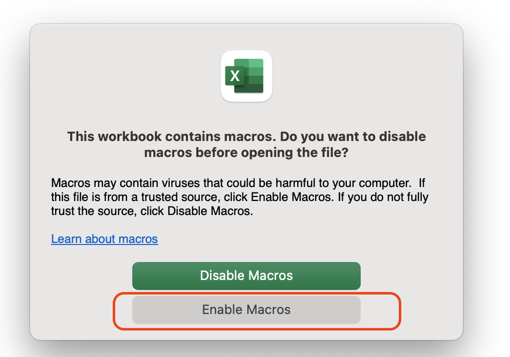

Connect to Data Sources - JDBC
When you wish to perform sensitive data scans on a particular type of database, you can use DB instances or databases as your data sources.
First, please ensure that when you add an AWS account, you select the CloudFormation method. If you added the account using the JDBC method, please proceed to Connect to the Database via EC2 Proxy.
Currently supported JDBC data sources:
| Supported Database Types |
|---|
| Amazon Redshift |
| Amazon Aurora |
| Microsoft SQL Server |
| MySQL |
| Oracle |
| PostgreSQL |
| Snowflake |
| Amazon RDS for MariaDB |
Prerequisites - Ensure Network Connectivity
- Please ensure that the inbound rule for the database you want to scan has self-reference in the security group. For detailed steps, refer to the official documentation.
- Have the database connection credentials ready (username/password).
How to get JDBC Credentials
DBA or the business unit creates a read-only user (User) for security auditing purposes. Grant this user read-only permissions: GRANT SHOW VIEW, SELECT ON *.* TO 'reader'@'%';
Connect to a Single JDBC Data Source
- From the left menu, select Connect Data Source.
- Choose the AWS Cloud tab.
- Click on an AWS account to open the detailed page.
- Select the Custom Database (JDBC) tab.
- Click Actions, Add Data Source.
-
In the pop-up window, enter the database credential information. (If you choose the Secret Manager method, you need to host the username/password in Secret Manager beforehand.)
Parameter Required Parameter Description Instance Name Yes Database name Enable SSL No Whether to connect via SSL Description (Optional) No Instance description Database Type Yes Choose between MySQL or other. If MySQL is selected, the solution supports automatic querying of databases in the instance. If other, you need to manually add the DB list. JDBC URL (Required) Yes Fill in a database to connect and scan. See the "JDBC URL Format and Examples" section at the bottom of this article for specific format. JDBC Databases No If you want to display multiple databases in a data catalog, enter a list of databases. For example, if one data catalog corresponds to one database instance, you can enter multiple databases under instance. If you only want to scan one database under this instance, keep it blank. Credentials Yes Choose username/password or SecretManager. Fill in the database's username/password. VPC Yes Select the VPC where the database is located Subnet Yes Select the VPC subnet where the database is located Security Group Yes Select the VPC security group where the database is located -
Click Authorize. You can close this window after waiting for 10s.
- You'll see the directory status change to blue
AUTHORIZED. This also means that in the SDP backend, AWS Glue has successfully created a Crawler.
You have now connected to this data source via JDBC 🎉. You can proceed to the next step to Define Classification and Grading Templates.
Once you have configured the classification template and completed the sensitive data discovery task:
- If the task is successful: You will see the directory status on this data source page turn green
ACTIVE, indicating that the data directory has been created for this data. - If the task fails: You will see the directory status on this data source page turn gray
Error message, and you can hover over the error to see the specific information.
Bulk Automatic Creation of JDBC Data Sources
If you have many data sources and adding them one by one in the UI is not convenient, you can use this bulk creation feature.
Step 1: Download Template
On the AWS account management page, click on the Bulk Create button. On the bulk operation page, first download the "Bulk Create Data Sources" template (.xlsm).
Step 2: Edit the Template File
Open this file with Microsoft Excel. Excel software will prompt, "Do you need Enabled Macros?" Choose Enable. 
Enter the data sources you need to scan, and it is recommended to do it in small batches (for easier error checking).
| Instance Name | SSL | Description | JDBC URL | JDBC Databases | SecretARN | Username | Password | AccountID | Region | ProviderID |
|---|---|---|---|---|---|---|---|---|---|---|
| test-instance-7001 | 1 | xxxx1.sql.db.com:23297 | jdbc:mysql://172.31.48.6:7001 | root | Temp123456! | 123456789 | ap-guangzhou-1 | 1 | ||
| test-instance-7002 | 1 | xxxx2.sql.db.com:3306 | jdbc:mysql://172.31.48.6:7002 | root | Temp123456! | 123456789 | ap-guangzhou-1 | 1 |
Connect to Data Sources via Database Proxy
When your RDS/database is in a private network and strict IP restrictions apply (only allowing fixed IPs to access), you need to connect to data sources this way.
- Create a database proxy: Create an EC2 as a proxy machine in the VPC where the solution is located. Refer to the detailed steps in Appendix: Create and Configure Database Proxy.
- When configuring the Proxy, configure the Nginx steps. Refer to the detailed steps in Appendix: Create and Configure Database Proxy.
- When creating the JDBC data source,
- For the Description field, it is recommended to fill in the actual database address.
- For the JDBC URL field, fill in
jdbc:mysql://ec2_public_ip:port/databasename. - Fill in the Provider field with 4. (Required for batch creation template)
--
Parameters for Creating Data Sources
JDBC URL Format and Examples
| JDBC URL | Example |
|-------------------------------------------------|----------------------------------------------------------------------------------------------|
| Amazon Redshift | `jdbc:redshift://xxx.us-east-1.redshift.amazonaws.com:8192/dev` |
| Amazon RDS for MySQL | `jdbc:mysql://xxx-cluster.cluster-xxx.us-east-1.rds.amazonaws.com:3306/employee` |
| Amazon RDS for PostgreSQL | `jdbc:postgresql://xxx-cluster.cluster-xxx.us-east-1.rds.amazonaws.com:5432/employee` |
| Amazon RDS for Oracle | `jdbc:oracle:thin://@xxx-cluster.cluster-xxx.us-east-1.rds.amazonaws.com:1521/employee` |
| Amazon RDS for Microsoft SQL Server | `jdbc:sqlserver://xxx-cluster.cluster-xxx.us-east-1.rds.amazonaws.com:1433;databaseName=employee` |
| Amazon Aurora PostgreSQL | `jdbc:postgresql://employee_instance_1.xxxxxxxxxxxx.us-east-2.rds.amazonaws.com:5432/employee` |
| Amazon RDS for MariaDB | `jdbc:mysql://xxx-cluster.cluster-xxx.aws-region.rds.amazonaws.com:3306/employee` |
| Snowflake (Standard Connection) | `jdbc:snowflake://account_name.snowflakecomputing.com/?user=user_name&db=sample&role=role_name&warehouse=warehouse_name` |
| Snowflake (AWS PrivateLink Connection) | `jdbc:snowflake://account_name.region.privatelink.snowflakecomputing.com/?user=user_name&db=sample&role=role_name&warehouse=warehouse_name` |
Provider Parameter (used for batch creation):
| Provider | Provider Id | Description |
|---|---|---|
| AWS | 1 | AWS (Installed method: CloudFormation) |
| Tencent | 2 | Tencent account |
| 3 | Google account | |
| AWS(JDBC Only) | 4 | AWS (Installed method:JDBC Only) |